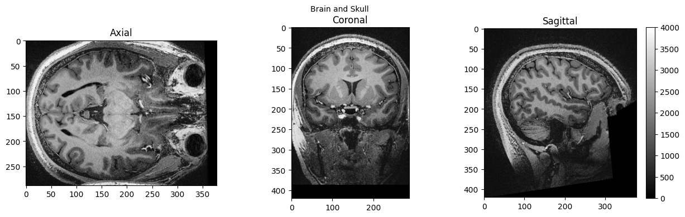
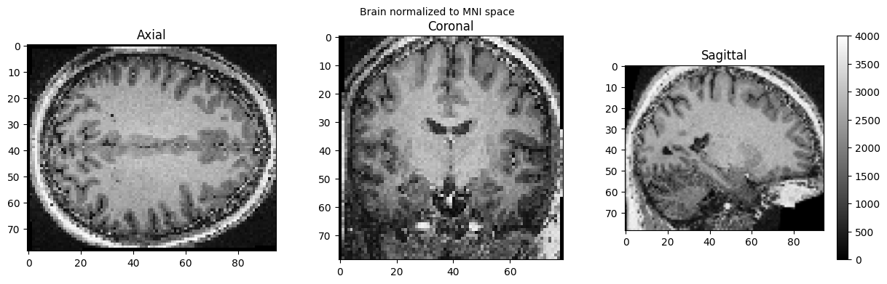

Basic Nipype#
Author: Steffen Bollmann
Date: 17 Oct 2024
Citation and Resources:#
Dataset from OSF#
Shaw, T., & Bollmann, S. (2020). Dataset for Towards Optimising MRI Methods for ChAracterisation of Tissue (TOMCAT) [Data set]. OSF. https://doi.org/10.17605/OSF.IO/BT4EZ
Tools included in this workflow#
Nipype:
Esteban, O., Markiewicz, C. J., Burns, C., Goncalves, M., Jarecka, D., Ziegler, E., Berleant, S., Ellis, D. G., Pinsard, B., Madison, C., Waskom, M., Notter, M. P., Clark, D., Manhães-Savio, A., Clark, D., Jordan, K., Dayan, M., Halchenko, Y. O., Loney, F., … Ghosh, S. (2025). nipy/nipype: 1.8.6 (1.8.6). Zenodo. https://doi.org/10.5281/zenodo.15054147
FSL:
M. Jenkinson, C.F. Beckmann, T.E. Behrens, M.W. Woolrich, S.M. Smith. FSL. NeuroImage, 62:782-90, 2012
Smith S. M. (2002). Fast robust automated brain extraction. Human brain mapping, 17(3), 143–155. https://doi.org/10.1002/hbm.10062
AFNI:
Cox RW (1996). AFNI: software for analysis and visualization of functional magnetic resonance neuroimages. Comput Biomed Res 29(3):162-173. doi:10.1006/cbmr.1996.0014 https://pubmed.ncbi.nlm.nih.gov/8812068/
RW Cox, JS Hyde (1997). Software tools for analysis and visualization of FMRI Data. NMR in Biomedicine, 10: 171-178. https://pubmed.ncbi.nlm.nih.gov/9430344/
SPM12:
Friston, K. J. (2007). Statistical parametric mapping: The analysis of functional brain images (1st ed). Elsevier / Academic Press.
Demonstrating the module system in Python and Nipype#
# we can use module to load fsl in a specific version
import module
await module.load('fsl/6.0.4')
await module.list()
Lmod Warning: MODULEPATH is undefined.
Lmod has detected the following error: The following module(s) are unknown:
"fsl/6.0.4"
Please check the spelling or version number. Also try "module spider ..."
It is also possible your cache file is out-of-date; it may help to try:
$ module --ignore_cache load "fsl/6.0.4"
Also make sure that all modulefiles written in TCL start with the string
#%Module
[]
!bet
/bin/bash: line 1: bet: command not found
Load AFNI and SPM as well#
await module.load('afni/22.3.06')
await module.load('spm12/r7771')
await module.list()
Lmod Warning: MODULEPATH is undefined.
Lmod has detected the following error: The following module(s) are unknown:
"afni/22.3.06"
Please check the spelling or version number. Also try "module spider ..."
It is also possible your cache file is out-of-date; it may help to try:
$ module --ignore_cache load "afni/22.3.06"
Also make sure that all modulefiles written in TCL start with the string
#%Module
Lmod Warning: MODULEPATH is undefined.
Lmod has detected the following error: The following module(s) are unknown:
"spm12/r7771"
Please check the spelling or version number. Also try "module spider ..."
It is also possible your cache file is out-of-date; it may help to try:
$ module --ignore_cache load "spm12/r7771"
Also make sure that all modulefiles written in TCL start with the string
#%Module
[]
Download test data#
%%bash
if [ -f ./sub-01_ses-01_7T_T1w_defaced.nii ]; then
echo "nii Output file exists, not downloading or unpacking again"
else
if [ ! -f ./sub-01_ses-01_7T_T1w_defaced.nii.gz ]; then
echo "nii.gz does not exist. So, it needs to be downloaded."
osfURL="osfstorage/TOMCAT_DIB/sub-01/ses-01_7T/anat/sub-01_ses-01_7T_T1w_defaced.nii.gz"
echo "downloading now ..."
osf -p bt4ez fetch $osfURL ./sub-01_ses-01_7T_T1w_defaced.nii.gz
fi
if [ -f ./sub-01_ses-01_7T_T1w_defaced.nii.gz ]; then
echo "nii.gz exists. So, it needs to be unpacked and deleted"
echo "unpacking now ..."
gunzip ./sub-01_ses-01_7T_T1w_defaced.nii.gz
fi
fi
nii.gz does not exist. So, it needs to be downloaded.
downloading now ...
nii.gz exists. So, it needs to be unpacked and deleted
unpacking now ...
0%| | 0.00/72.7M [00:00<?, ?bytes/s]
0%| | 16.4k/72.7M [00:00<11:45, 103kbytes/s]
0%| | 49.2k/72.7M [00:00<09:10, 132kbytes/s]
0%| | 81.9k/72.7M [00:00<08:48, 137kbytes/s]
0%| | 131k/72.7M [00:00<05:47, 209kbytes/s]
0%| | 180k/72.7M [00:00<04:24, 274kbytes/s]
0%| | 229k/72.7M [00:00<03:40, 329kbytes/s]
0%| | 295k/72.7M [00:01<03:18, 365kbytes/s]
1%| | 377k/72.7M [00:01<02:41, 447kbytes/s]
1%| | 442k/72.7M [00:01<02:39, 452kbytes/s]
1%| | 524k/72.7M [00:01<02:28, 485kbytes/s]
1%| | 590k/72.7M [00:01<02:22, 504kbytes/s]
1%| | 672k/72.7M [00:01<02:20, 514kbytes/s]
1%| | 737k/72.7M [00:01<02:24, 500kbytes/s]
1%| | 819k/72.7M [00:02<02:09, 556kbytes/s]
1%| | 885k/72.7M [00:02<02:20, 512kbytes/s]
1%|▏ | 967k/72.7M [00:02<02:15, 530kbytes/s]
1%|▏ | 1.03M/72.7M [00:02<02:13, 539kbytes/s]
2%|▏ | 1.11M/72.7M [00:02<02:12, 539kbytes/s]
2%|▏ | 1.18M/72.7M [00:02<02:18, 517kbytes/s]
2%|▏ | 1.26M/72.7M [00:02<02:07, 562kbytes/s]
2%|▏ | 1.33M/72.7M [00:03<02:17, 521kbytes/s]
2%|▏ | 1.41M/72.7M [00:03<02:12, 539kbytes/s]
2%|▏ | 1.47M/72.7M [00:03<02:11, 541kbytes/s]
2%|▏ | 1.56M/72.7M [00:03<02:11, 540kbytes/s]
2%|▏ | 1.62M/72.7M [00:03<02:16, 520kbytes/s]
2%|▏ | 1.70M/72.7M [00:03<02:06, 560kbytes/s]
2%|▏ | 1.77M/72.7M [00:03<02:16, 518kbytes/s]
3%|▎ | 1.85M/72.7M [00:03<02:11, 538kbytes/s]
3%|▎ | 1.92M/72.7M [00:04<02:11, 539kbytes/s]
3%|▎ | 2.00M/72.7M [00:04<02:12, 534kbytes/s]
3%|▎ | 2.06M/72.7M [00:04<02:14, 525kbytes/s]
3%|▎ | 2.15M/72.7M [00:04<02:11, 538kbytes/s]
3%|▎ | 2.21M/72.7M [00:04<02:16, 517kbytes/s]
3%|▎ | 2.29M/72.7M [00:04<02:07, 551kbytes/s]
3%|▎ | 2.36M/72.7M [00:04<02:13, 528kbytes/s]
3%|▎ | 2.44M/72.7M [00:05<02:08, 545kbytes/s]
3%|▎ | 2.51M/72.7M [00:05<02:12, 528kbytes/s]
4%|▎ | 2.59M/72.7M [00:05<02:08, 547kbytes/s]
4%|▎ | 2.65M/72.7M [00:05<02:14, 521kbytes/s]
4%|▍ | 2.74M/72.7M [00:05<02:07, 549kbytes/s]
4%|▍ | 2.80M/72.7M [00:05<02:12, 529kbytes/s]
4%|▍ | 2.88M/72.7M [00:05<02:08, 545kbytes/s]
4%|▍ | 2.95M/72.7M [00:06<02:12, 524kbytes/s]
4%|▍ | 3.03M/72.7M [00:06<02:06, 551kbytes/s]
4%|▍ | 3.10M/72.7M [00:06<02:12, 525kbytes/s]
4%|▍ | 3.18M/72.7M [00:06<02:07, 545kbytes/s]
4%|▍ | 3.24M/72.7M [00:06<02:12, 523kbytes/s]
5%|▍ | 3.33M/72.7M [00:06<02:06, 548kbytes/s]
5%|▍ | 3.39M/72.7M [00:06<02:13, 521kbytes/s]
5%|▍ | 3.47M/72.7M [00:07<02:04, 554kbytes/s]
5%|▍ | 3.54M/72.7M [00:07<02:11, 525kbytes/s]
5%|▍ | 3.62M/72.7M [00:07<02:07, 542kbytes/s]
5%|▌ | 3.69M/72.7M [00:07<02:09, 534kbytes/s]
5%|▌ | 3.77M/72.7M [00:07<02:06, 546kbytes/s]
5%|▌ | 3.83M/72.7M [00:07<02:12, 520kbytes/s]
5%|▌ | 3.92M/72.7M [00:07<02:05, 549kbytes/s]
5%|▌ | 3.98M/72.7M [00:07<02:10, 528kbytes/s]
6%|▌ | 4.06M/72.7M [00:08<02:06, 544kbytes/s]
6%|▌ | 4.13M/72.7M [00:08<02:09, 528kbytes/s]
6%|▌ | 4.23M/72.7M [00:08<02:00, 569kbytes/s]
6%|▌ | 4.29M/72.7M [00:08<02:03, 552kbytes/s]
6%|▌ | 4.36M/72.7M [00:08<02:07, 537kbytes/s]
6%|▌ | 4.42M/72.7M [00:08<02:28, 460kbytes/s]
6%|▌ | 4.47M/72.7M [00:09<02:54, 391kbytes/s]
6%|▋ | 4.57M/72.7M [00:09<02:39, 428kbytes/s]
6%|▋ | 4.69M/72.7M [00:09<02:23, 474kbytes/s]
7%|▋ | 4.78M/72.7M [00:09<01:59, 567kbytes/s]
7%|▋ | 4.85M/72.7M [00:09<02:13, 507kbytes/s]
7%|▋ | 4.92M/72.7M [00:09<02:15, 499kbytes/s]
7%|▋ | 4.98M/72.7M [00:10<02:45, 410kbytes/s]
7%|▋ | 5.06M/72.7M [00:10<02:44, 412kbytes/s]
7%|▋ | 5.18M/72.7M [00:10<02:27, 457kbytes/s]
7%|▋ | 5.28M/72.7M [00:10<02:22, 471kbytes/s]
7%|▋ | 5.39M/72.7M [00:10<02:15, 497kbytes/s]
8%|▊ | 5.51M/72.7M [00:11<02:10, 514kbytes/s]
8%|▊ | 5.60M/72.7M [00:11<02:13, 504kbytes/s]
8%|▊ | 5.72M/72.7M [00:11<02:09, 519kbytes/s]
8%|▊ | 5.83M/72.7M [00:11<02:06, 528kbytes/s]
8%|▊ | 5.95M/72.7M [00:11<02:04, 537kbytes/s]
8%|▊ | 6.05M/72.7M [00:12<02:08, 520kbytes/s]
8%|▊ | 6.16M/72.7M [00:12<02:05, 531kbytes/s]
9%|▊ | 6.28M/72.7M [00:12<02:02, 541kbytes/s]
9%|▉ | 6.39M/72.7M [00:12<02:01, 547kbytes/s]
9%|▉ | 6.50M/72.7M [00:12<02:02, 541kbytes/s]
9%|▉ | 6.60M/72.7M [00:13<02:04, 531kbytes/s]
9%|▉ | 6.72M/72.7M [00:13<02:02, 537kbytes/s]
9%|▉ | 6.83M/72.7M [00:13<02:03, 534kbytes/s]
10%|▉ | 6.93M/72.7M [00:13<02:05, 525kbytes/s]
10%|▉ | 7.05M/72.7M [00:13<02:02, 536kbytes/s]
10%|▉ | 7.16M/72.7M [00:14<02:02, 534kbytes/s]
10%|▉ | 7.26M/72.7M [00:14<02:04, 525kbytes/s]
10%|█ | 7.37M/72.7M [00:14<02:02, 535kbytes/s]
10%|█ | 7.49M/72.7M [00:14<02:03, 528kbytes/s]
10%|█ | 7.59M/72.7M [00:15<02:04, 521kbytes/s]
11%|█ | 7.70M/72.7M [00:15<02:02, 532kbytes/s]
11%|█ | 7.82M/72.7M [00:15<02:02, 529kbytes/s]
11%|█ | 7.91M/72.7M [00:15<02:04, 520kbytes/s]
11%|█ | 8.03M/72.7M [00:15<02:02, 526kbytes/s]
11%|█ | 8.14M/72.7M [00:16<02:00, 535kbytes/s]
11%|█▏ | 8.24M/72.7M [00:16<02:02, 526kbytes/s]
11%|█▏ | 8.36M/72.7M [00:16<02:00, 534kbytes/s]
12%|█▏ | 8.47M/72.7M [00:16<01:59, 538kbytes/s]
12%|█▏ | 8.55M/72.7M [00:16<02:08, 499kbytes/s]
12%|█▏ | 8.62M/72.7M [00:17<02:26, 437kbytes/s]
12%|█▏ | 8.72M/72.7M [00:17<02:21, 451kbytes/s]
12%|█▏ | 8.85M/72.7M [00:17<02:08, 498kbytes/s]
12%|█▏ | 8.96M/72.7M [00:17<02:03, 517kbytes/s]
12%|█▏ | 9.04M/72.7M [00:17<02:10, 489kbytes/s]
13%|█▎ | 9.18M/72.7M [00:18<02:00, 526kbytes/s]
13%|█▎ | 9.29M/72.7M [00:18<01:58, 536kbytes/s]
13%|█▎ | 9.37M/72.7M [00:18<02:05, 503kbytes/s]
13%|█▎ | 9.50M/72.7M [00:18<01:57, 536kbytes/s]
13%|█▎ | 9.62M/72.7M [00:18<01:56, 542kbytes/s]
13%|█▎ | 9.70M/72.7M [00:19<02:04, 506kbytes/s]
14%|█▎ | 9.83M/72.7M [00:19<01:56, 539kbytes/s]
14%|█▎ | 9.95M/72.7M [00:19<01:55, 544kbytes/s]
14%|█▍ | 10.0M/72.7M [00:19<02:03, 508kbytes/s]
14%|█▍ | 10.2M/72.7M [00:19<01:56, 536kbytes/s]
14%|█▍ | 10.3M/72.7M [00:20<01:54, 543kbytes/s]
14%|█▍ | 10.4M/72.7M [00:20<02:02, 508kbytes/s]
14%|█▍ | 10.5M/72.7M [00:20<01:53, 547kbytes/s]
15%|█▍ | 10.6M/72.7M [00:20<01:54, 544kbytes/s]
15%|█▍ | 10.7M/72.7M [00:20<02:01, 509kbytes/s]
15%|█▍ | 10.8M/72.7M [00:21<01:54, 540kbytes/s]
15%|█▌ | 10.9M/72.7M [00:21<01:53, 543kbytes/s]
15%|█▌ | 11.0M/72.7M [00:21<02:01, 509kbytes/s]
15%|█▌ | 11.1M/72.7M [00:21<01:53, 540kbytes/s]
15%|█▌ | 11.3M/72.7M [00:22<01:52, 546kbytes/s]
16%|█▌ | 11.3M/72.7M [00:22<02:01, 504kbytes/s]
16%|█▌ | 11.4M/72.7M [00:22<02:15, 453kbytes/s]
16%|█▌ | 11.5M/72.7M [00:22<02:12, 462kbytes/s]
16%|█▌ | 11.6M/72.7M [00:22<02:00, 507kbytes/s]
16%|█▌ | 11.7M/72.7M [00:23<01:56, 523kbytes/s]
16%|█▋ | 11.8M/72.7M [00:23<02:03, 494kbytes/s]
16%|█▋ | 12.0M/72.7M [00:23<01:54, 530kbytes/s]
17%|█▋ | 12.1M/72.7M [00:23<01:52, 540kbytes/s]
17%|█▋ | 12.2M/72.7M [00:23<01:59, 506kbytes/s]
17%|█▋ | 12.3M/72.7M [00:24<01:53, 534kbytes/s]
17%|█▋ | 12.4M/72.7M [00:24<01:50, 544kbytes/s]
17%|█▋ | 12.5M/72.7M [00:24<01:58, 509kbytes/s]
17%|█▋ | 12.6M/72.7M [00:24<01:52, 532kbytes/s]
17%|█▋ | 12.7M/72.7M [00:24<01:57, 509kbytes/s]
18%|█▊ | 12.8M/72.7M [00:25<01:55, 518kbytes/s]
18%|█▊ | 12.9M/72.7M [00:25<01:54, 523kbytes/s]
18%|█▊ | 13.0M/72.7M [00:25<01:55, 518kbytes/s]
18%|█▊ | 13.1M/72.7M [00:25<01:54, 521kbytes/s]
18%|█▊ | 13.3M/72.7M [00:25<01:53, 523kbytes/s]
18%|█▊ | 13.4M/72.7M [00:26<01:54, 518kbytes/s]
19%|█▊ | 13.5M/72.7M [00:26<01:53, 523kbytes/s]
19%|█▊ | 13.6M/72.7M [00:26<01:52, 527kbytes/s]
19%|█▉ | 13.7M/72.7M [00:26<01:53, 521kbytes/s]
19%|█▉ | 13.8M/72.7M [00:26<01:52, 521kbytes/s]
19%|█▉ | 13.9M/72.7M [00:27<01:52, 523kbytes/s]
19%|█▉ | 14.0M/72.7M [00:27<01:53, 518kbytes/s]
19%|█▉ | 14.1M/72.7M [00:27<01:52, 522kbytes/s]
20%|█▉ | 14.2M/72.7M [00:27<01:51, 524kbytes/s]
20%|█▉ | 14.3M/72.7M [00:28<01:52, 519kbytes/s]
20%|█▉ | 14.5M/72.7M [00:28<01:51, 523kbytes/s]
20%|██ | 14.6M/72.7M [00:28<01:52, 514kbytes/s]
20%|██ | 14.7M/72.7M [00:28<01:53, 512kbytes/s]
20%|██ | 14.8M/72.7M [00:28<01:50, 523kbytes/s]
20%|██ | 14.9M/72.7M [00:29<01:49, 527kbytes/s]
21%|██ | 15.0M/72.7M [00:29<01:50, 521kbytes/s]
21%|██ | 15.1M/72.7M [00:29<01:48, 531kbytes/s]
21%|██ | 15.2M/72.7M [00:29<01:47, 534kbytes/s]
21%|██ | 15.3M/72.7M [00:29<01:49, 525kbytes/s]
21%|██ | 15.4M/72.7M [00:30<01:46, 535kbytes/s]
21%|██▏ | 15.5M/72.7M [00:30<01:46, 535kbytes/s]
22%|██▏ | 15.6M/72.7M [00:30<01:48, 526kbytes/s]
22%|██▏ | 15.8M/72.7M [00:30<01:46, 537kbytes/s]
22%|██▏ | 15.9M/72.7M [00:30<01:45, 536kbytes/s]
22%|██▏ | 16.0M/72.7M [00:31<01:48, 524kbytes/s]
22%|██▏ | 16.0M/72.7M [00:31<01:59, 475kbytes/s]
22%|██▏ | 16.1M/72.7M [00:31<02:15, 417kbytes/s]
22%|██▏ | 16.2M/72.7M [00:31<02:04, 454kbytes/s]
22%|██▏ | 16.3M/72.7M [00:31<02:00, 468kbytes/s]
23%|██▎ | 16.4M/72.7M [00:32<01:53, 495kbytes/s]
23%|██▎ | 16.5M/72.7M [00:32<01:51, 502kbytes/s]
23%|██▎ | 16.6M/72.7M [00:32<01:51, 502kbytes/s]
23%|██▎ | 16.7M/72.7M [00:32<01:47, 520kbytes/s]
23%|██▎ | 16.9M/72.7M [00:32<01:45, 527kbytes/s]
23%|██▎ | 16.9M/72.7M [00:33<01:52, 497kbytes/s]
23%|██▎ | 17.1M/72.7M [00:33<01:44, 532kbytes/s]
24%|██▎ | 17.2M/72.7M [00:33<01:42, 540kbytes/s]
24%|██▍ | 17.3M/72.7M [00:33<01:50, 502kbytes/s]
24%|██▍ | 17.4M/72.7M [00:33<01:42, 539kbytes/s]
24%|██▍ | 17.5M/72.7M [00:34<01:41, 545kbytes/s]
24%|██▍ | 17.6M/72.7M [00:34<01:48, 510kbytes/s]
24%|██▍ | 17.7M/72.7M [00:34<01:41, 541kbytes/s]
25%|██▍ | 17.8M/72.7M [00:34<01:40, 548kbytes/s]
25%|██▍ | 17.9M/72.7M [00:34<01:46, 512kbytes/s]
25%|██▍ | 18.1M/72.7M [00:35<01:40, 544kbytes/s]
25%|██▍ | 18.2M/72.7M [00:35<01:39, 549kbytes/s]
25%|██▌ | 18.3M/72.7M [00:35<01:46, 511kbytes/s]
25%|██▌ | 18.4M/72.7M [00:35<01:39, 544kbytes/s]
25%|██▌ | 18.5M/72.7M [00:36<01:38, 549kbytes/s]
26%|██▌ | 18.6M/72.7M [00:36<01:45, 512kbytes/s]
26%|██▌ | 18.7M/72.7M [00:36<01:40, 540kbytes/s]
26%|██▌ | 18.8M/72.7M [00:36<01:42, 524kbytes/s]
26%|██▌ | 18.9M/72.7M [00:36<01:51, 482kbytes/s]
26%|██▌ | 19.0M/72.7M [00:37<01:51, 481kbytes/s]
26%|██▌ | 19.1M/72.7M [00:37<01:55, 464kbytes/s]
26%|██▋ | 19.2M/72.7M [00:37<01:44, 511kbytes/s]
27%|██▋ | 19.3M/72.7M [00:37<01:41, 527kbytes/s]
27%|██▋ | 19.4M/72.7M [00:37<01:47, 497kbytes/s]
27%|██▋ | 19.5M/72.7M [00:38<01:39, 533kbytes/s]
27%|██▋ | 19.6M/72.7M [00:38<01:37, 543kbytes/s]
27%|██▋ | 19.7M/72.7M [00:38<01:44, 509kbytes/s]
27%|██▋ | 19.9M/72.7M [00:38<01:37, 542kbytes/s]
27%|██▋ | 20.0M/72.7M [00:38<01:36, 546kbytes/s]
28%|██▊ | 20.1M/72.7M [00:39<01:43, 511kbytes/s]
28%|██▊ | 20.2M/72.7M [00:39<01:36, 543kbytes/s]
28%|██▊ | 20.3M/72.7M [00:39<01:35, 549kbytes/s]
28%|██▊ | 20.4M/72.7M [00:39<01:49, 478kbytes/s]
28%|██▊ | 20.5M/72.7M [00:40<01:49, 478kbytes/s]
28%|██▊ | 20.6M/72.7M [00:40<01:50, 472kbytes/s]
28%|██▊ | 20.7M/72.7M [00:40<01:48, 481kbytes/s]
29%|██▊ | 20.8M/72.7M [00:40<01:41, 512kbytes/s]
29%|██▉ | 20.9M/72.7M [00:40<01:41, 510kbytes/s]
29%|██▉ | 21.0M/72.7M [00:40<01:38, 527kbytes/s]
29%|██▉ | 21.1M/72.7M [00:41<01:35, 538kbytes/s]
29%|██▉ | 21.3M/72.7M [00:41<01:33, 553kbytes/s]
29%|██▉ | 21.3M/72.7M [00:41<01:35, 538kbytes/s]
30%|██▉ | 21.5M/72.7M [00:41<01:33, 547kbytes/s]
30%|██▉ | 21.6M/72.7M [00:41<01:36, 528kbytes/s]
30%|██▉ | 21.7M/72.7M [00:42<01:31, 555kbytes/s]
30%|██▉ | 21.8M/72.7M [00:42<01:34, 541kbytes/s]
30%|███ | 21.9M/72.7M [00:42<01:33, 545kbytes/s]
30%|███ | 22.0M/72.7M [00:42<01:36, 525kbytes/s]
30%|███ | 22.1M/72.7M [00:42<01:30, 560kbytes/s]
31%|███ | 22.2M/72.7M [00:43<01:32, 545kbytes/s]
31%|███ | 22.3M/72.7M [00:43<01:26, 585kbytes/s]
31%|███ | 22.4M/72.7M [00:43<01:28, 567kbytes/s]
31%|███ | 22.5M/72.7M [00:43<01:49, 457kbytes/s]
31%|███ | 22.5M/72.7M [00:43<01:54, 437kbytes/s]
31%|███ | 22.6M/72.7M [00:44<01:55, 434kbytes/s]
31%|███▏ | 22.8M/72.7M [00:44<01:40, 497kbytes/s]
31%|███▏ | 22.9M/72.7M [00:44<01:39, 500kbytes/s]
32%|███▏ | 23.0M/72.7M [00:44<01:40, 495kbytes/s]
32%|███▏ | 23.1M/72.7M [00:44<01:33, 531kbytes/s]
32%|███▏ | 23.2M/72.7M [00:45<01:30, 548kbytes/s]
32%|███▏ | 23.3M/72.7M [00:45<01:32, 534kbytes/s]
32%|███▏ | 23.4M/72.7M [00:45<01:34, 520kbytes/s]
32%|███▏ | 23.5M/72.7M [00:45<01:31, 535kbytes/s]
33%|███▎ | 23.6M/72.7M [00:45<01:26, 567kbytes/s]
33%|███▎ | 23.7M/72.7M [00:46<01:28, 550kbytes/s]
33%|███▎ | 23.8M/72.7M [00:46<01:32, 530kbytes/s]
33%|███▎ | 24.0M/72.7M [00:46<01:30, 539kbytes/s]
33%|███▎ | 24.1M/72.7M [00:46<01:25, 571kbytes/s]
33%|███▎ | 24.2M/72.7M [00:46<01:27, 553kbytes/s]
33%|███▎ | 24.3M/72.7M [00:47<01:31, 530kbytes/s]
34%|███▎ | 24.4M/72.7M [00:47<01:29, 541kbytes/s]
34%|███▎ | 24.5M/72.7M [00:47<01:33, 513kbytes/s]
34%|███▍ | 24.6M/72.7M [00:47<01:34, 509kbytes/s]
34%|███▍ | 24.7M/72.7M [00:48<01:32, 520kbytes/s]
34%|███▍ | 24.9M/72.7M [00:48<01:36, 494kbytes/s]
34%|███▍ | 24.9M/72.7M [00:48<01:43, 461kbytes/s]
34%|███▍ | 25.0M/72.7M [00:48<01:25, 558kbytes/s]
35%|███▍ | 25.1M/72.7M [00:48<01:33, 509kbytes/s]
35%|███▍ | 25.2M/72.7M [00:48<01:32, 513kbytes/s]
35%|███▍ | 25.2M/72.7M [00:49<01:42, 462kbytes/s]
35%|███▍ | 25.3M/72.7M [00:49<01:42, 461kbytes/s]
35%|███▍ | 25.4M/72.7M [00:49<01:41, 466kbytes/s]
35%|███▌ | 25.4M/72.7M [00:49<01:33, 505kbytes/s]
35%|███▌ | 25.5M/72.7M [00:49<01:29, 528kbytes/s]
35%|███▌ | 25.6M/72.7M [00:49<01:26, 545kbytes/s]
35%|███▌ | 25.6M/72.7M [00:49<01:37, 481kbytes/s]
35%|███▌ | 25.7M/72.7M [00:49<01:24, 558kbytes/s]
35%|███▌ | 25.8M/72.7M [00:50<01:26, 543kbytes/s]
36%|███▌ | 25.9M/72.7M [00:50<01:29, 523kbytes/s]
36%|███▌ | 26.0M/72.7M [00:50<01:20, 579kbytes/s]
36%|███▌ | 26.0M/72.7M [00:50<01:21, 572kbytes/s]
36%|███▌ | 26.1M/72.7M [00:50<01:32, 506kbytes/s]
36%|███▌ | 26.2M/72.7M [00:50<01:22, 565kbytes/s]
36%|███▌ | 26.2M/72.7M [00:50<01:24, 549kbytes/s]
36%|███▌ | 26.3M/72.7M [00:51<01:27, 530kbytes/s]
36%|███▋ | 26.4M/72.7M [00:51<01:25, 542kbytes/s]
36%|███▋ | 26.4M/72.7M [00:51<01:22, 559kbytes/s]
36%|███▋ | 26.5M/72.7M [00:51<01:19, 577kbytes/s]
37%|███▋ | 26.6M/72.7M [00:51<01:22, 557kbytes/s]
37%|███▋ | 26.6M/72.7M [00:51<01:30, 508kbytes/s]
37%|███▋ | 26.7M/72.7M [00:51<01:27, 526kbytes/s]
37%|███▋ | 26.8M/72.7M [00:51<01:23, 549kbytes/s]
37%|███▋ | 26.9M/72.7M [00:52<01:30, 504kbytes/s]
37%|███▋ | 26.9M/72.7M [00:52<01:25, 533kbytes/s]
37%|███▋ | 27.0M/72.7M [00:52<01:23, 545kbytes/s]
37%|███▋ | 27.1M/72.7M [00:52<01:25, 535kbytes/s]
37%|███▋ | 27.1M/72.7M [00:52<01:26, 528kbytes/s]
37%|███▋ | 27.2M/72.7M [00:52<01:19, 573kbytes/s]
38%|███▊ | 27.3M/72.7M [00:52<01:27, 520kbytes/s]
38%|███▊ | 27.4M/72.7M [00:53<01:21, 553kbytes/s]
38%|███▊ | 27.4M/72.7M [00:53<01:22, 551kbytes/s]
38%|███▊ | 27.5M/72.7M [00:53<01:23, 541kbytes/s]
38%|███▊ | 27.6M/72.7M [00:53<01:24, 532kbytes/s]
38%|███▊ | 27.7M/72.7M [00:53<01:19, 568kbytes/s]
38%|███▊ | 27.7M/72.7M [00:53<01:26, 522kbytes/s]
38%|███▊ | 27.8M/72.7M [00:53<01:21, 553kbytes/s]
38%|███▊ | 27.9M/72.7M [00:53<01:21, 547kbytes/s]
38%|███▊ | 28.0M/72.7M [00:54<01:22, 543kbytes/s]
39%|███▊ | 28.0M/72.7M [00:54<01:23, 533kbytes/s]
39%|███▊ | 28.1M/72.7M [00:54<01:35, 465kbytes/s]
39%|███▊ | 28.1M/72.7M [00:54<01:52, 396kbytes/s]
39%|███▉ | 28.2M/72.7M [00:54<01:35, 467kbytes/s]
39%|███▉ | 28.3M/72.7M [00:54<01:22, 540kbytes/s]
39%|███▉ | 28.4M/72.7M [00:55<01:32, 480kbytes/s]
39%|███▉ | 28.4M/72.7M [00:55<01:30, 491kbytes/s]
39%|███▉ | 28.5M/72.7M [00:55<01:18, 562kbytes/s]
39%|███▉ | 28.6M/72.7M [00:55<01:29, 493kbytes/s]
39%|███▉ | 28.7M/72.7M [00:55<01:22, 531kbytes/s]
40%|███▉ | 28.7M/72.7M [00:55<01:19, 553kbytes/s]
40%|███▉ | 28.8M/72.7M [00:55<01:18, 556kbytes/s]
40%|███▉ | 28.9M/72.7M [00:55<01:25, 511kbytes/s]
40%|███▉ | 29.0M/72.7M [00:56<01:16, 573kbytes/s]
40%|███▉ | 29.0M/72.7M [00:56<01:25, 511kbytes/s]
40%|████ | 29.1M/72.7M [00:56<01:20, 538kbytes/s]
40%|████ | 29.2M/72.7M [00:56<01:17, 559kbytes/s]
40%|████ | 29.2M/72.7M [00:56<01:17, 563kbytes/s]
40%|████ | 29.3M/72.7M [00:56<01:24, 516kbytes/s]
40%|████ | 29.4M/72.7M [00:56<01:15, 577kbytes/s]
41%|████ | 29.5M/72.7M [00:57<01:23, 516kbytes/s]
41%|████ | 29.6M/72.7M [00:57<01:19, 543kbytes/s]
41%|████ | 29.6M/72.7M [00:57<01:17, 556kbytes/s]
41%|████ | 29.7M/72.7M [00:57<01:15, 566kbytes/s]
41%|████ | 29.8M/72.7M [00:57<01:14, 576kbytes/s]
41%|████ | 29.8M/72.7M [00:57<01:22, 523kbytes/s]
41%|████ | 29.9M/72.7M [00:57<01:21, 523kbytes/s]
41%|████ | 29.9M/72.7M [00:57<01:20, 531kbytes/s]
41%|████▏ | 30.0M/72.7M [00:58<01:20, 533kbytes/s]
41%|████▏ | 30.1M/72.7M [00:58<01:21, 519kbytes/s]
42%|████▏ | 30.2M/72.7M [00:58<01:15, 566kbytes/s]
42%|████▏ | 30.2M/72.7M [00:58<01:21, 521kbytes/s]
42%|████▏ | 30.3M/72.7M [00:58<01:17, 546kbytes/s]
42%|████▏ | 30.4M/72.7M [00:58<01:17, 547kbytes/s]
42%|████▏ | 30.5M/72.7M [00:58<01:17, 546kbytes/s]
42%|████▏ | 30.5M/72.7M [00:58<01:20, 526kbytes/s]
42%|████▏ | 30.6M/72.7M [00:59<01:13, 569kbytes/s]
42%|████▏ | 30.7M/72.7M [00:59<01:19, 526kbytes/s]
42%|████▏ | 30.8M/72.7M [00:59<01:16, 545kbytes/s]
42%|████▏ | 30.8M/72.7M [00:59<01:16, 549kbytes/s]
43%|████▎ | 30.9M/72.7M [00:59<01:16, 543kbytes/s]
43%|████▎ | 31.0M/72.7M [00:59<01:19, 523kbytes/s]
43%|████▎ | 31.1M/72.7M [00:59<01:12, 572kbytes/s]
43%|████▎ | 31.1M/72.7M [01:00<01:19, 520kbytes/s]
43%|████▎ | 31.2M/72.7M [01:00<01:15, 548kbytes/s]
43%|████▎ | 31.3M/72.7M [01:00<01:15, 551kbytes/s]
43%|████▎ | 31.4M/72.7M [01:00<01:16, 539kbytes/s]
43%|████▎ | 31.4M/72.7M [01:00<01:18, 529kbytes/s]
43%|████▎ | 31.5M/72.7M [01:00<01:11, 577kbytes/s]
43%|████▎ | 31.6M/72.7M [01:00<01:19, 517kbytes/s]
44%|████▎ | 31.7M/72.7M [01:01<01:14, 549kbytes/s]
44%|████▎ | 31.7M/72.7M [01:01<01:14, 552kbytes/s]
44%|████▎ | 31.8M/72.7M [01:01<01:11, 570kbytes/s]
44%|████▍ | 31.9M/72.7M [01:01<01:10, 577kbytes/s]
44%|████▍ | 31.9M/72.7M [01:01<01:16, 530kbytes/s]
44%|████▍ | 32.0M/72.7M [01:01<01:19, 509kbytes/s]
44%|████▍ | 32.1M/72.7M [01:01<01:11, 572kbytes/s]
44%|████▍ | 32.1M/72.7M [01:01<01:17, 521kbytes/s]
44%|████▍ | 32.2M/72.7M [01:02<01:15, 538kbytes/s]
44%|████▍ | 32.3M/72.7M [01:02<01:12, 554kbytes/s]
44%|████▍ | 32.3M/72.7M [01:02<01:17, 518kbytes/s]
45%|████▍ | 32.4M/72.7M [01:02<01:23, 482kbytes/s]
45%|████▍ | 32.5M/72.7M [01:02<01:21, 490kbytes/s]
45%|████▍ | 32.6M/72.7M [01:02<01:21, 489kbytes/s]
45%|████▌ | 32.7M/72.7M [01:03<01:17, 515kbytes/s]
45%|████▌ | 32.8M/72.7M [01:03<01:15, 530kbytes/s]
45%|████▌ | 33.0M/72.7M [01:03<01:13, 541kbytes/s]
45%|████▌ | 33.1M/72.7M [01:03<01:17, 514kbytes/s]
46%|████▌ | 33.1M/72.7M [01:03<01:25, 465kbytes/s]
46%|████▌ | 33.2M/72.7M [01:04<01:27, 453kbytes/s]
46%|████▌ | 33.3M/72.7M [01:04<01:21, 481kbytes/s]
46%|████▌ | 33.4M/72.7M [01:04<01:18, 502kbytes/s]
46%|████▌ | 33.6M/72.7M [01:04<01:13, 536kbytes/s]
46%|████▋ | 33.7M/72.7M [01:04<01:17, 503kbytes/s]
46%|████▋ | 33.8M/72.7M [01:05<01:14, 522kbytes/s]
47%|████▋ | 33.9M/72.7M [01:05<01:12, 535kbytes/s]
47%|████▋ | 34.0M/72.7M [01:05<01:11, 544kbytes/s]
47%|████▋ | 34.1M/72.7M [01:05<01:13, 524kbytes/s]
47%|████▋ | 34.2M/72.7M [01:05<01:11, 538kbytes/s]
47%|████▋ | 34.3M/72.7M [01:06<01:10, 546kbytes/s]
47%|████▋ | 34.4M/72.7M [01:06<01:09, 552kbytes/s]
48%|████▊ | 34.5M/72.7M [01:06<01:11, 531kbytes/s]
48%|████▊ | 34.7M/72.7M [01:06<01:10, 541kbytes/s]
48%|████▊ | 34.8M/72.7M [01:06<01:09, 547kbytes/s]
48%|████▊ | 34.9M/72.7M [01:07<01:08, 551kbytes/s]
48%|████▊ | 35.0M/72.7M [01:07<01:10, 531kbytes/s]
48%|████▊ | 35.1M/72.7M [01:07<01:09, 543kbytes/s]
48%|████▊ | 35.2M/72.7M [01:07<01:08, 549kbytes/s]
49%|████▊ | 35.3M/72.7M [01:07<01:07, 555kbytes/s]
49%|████▊ | 35.4M/72.7M [01:08<01:10, 532kbytes/s]
49%|████▉ | 35.5M/72.7M [01:08<01:08, 544kbytes/s]
49%|████▉ | 35.7M/72.7M [01:08<01:05, 568kbytes/s]
49%|████▉ | 35.8M/72.7M [01:08<01:07, 551kbytes/s]
49%|████▉ | 35.9M/72.7M [01:08<01:09, 531kbytes/s]
50%|████▉ | 36.0M/72.7M [01:09<01:07, 541kbytes/s]
50%|████▉ | 36.1M/72.7M [01:09<01:06, 548kbytes/s]
50%|████▉ | 36.2M/72.7M [01:09<01:05, 554kbytes/s]
50%|████▉ | 36.3M/72.7M [01:09<00:58, 625kbytes/s]
50%|█████ | 36.4M/72.7M [01:09<01:03, 568kbytes/s]
50%|█████ | 36.5M/72.7M [01:10<01:11, 509kbytes/s]
50%|█████ | 36.6M/72.7M [01:10<01:11, 509kbytes/s]
50%|█████ | 36.7M/72.7M [01:10<01:08, 527kbytes/s]
51%|█████ | 36.8M/72.7M [01:10<01:09, 514kbytes/s]
51%|█████ | 36.9M/72.7M [01:10<01:07, 530kbytes/s]
51%|█████ | 37.0M/72.7M [01:11<01:05, 541kbytes/s]
51%|█████ | 37.1M/72.7M [01:11<01:04, 549kbytes/s]
51%|█████ | 37.2M/72.7M [01:11<01:07, 529kbytes/s]
51%|█████▏ | 37.3M/72.7M [01:11<01:05, 540kbytes/s]
52%|█████▏ | 37.4M/72.7M [01:11<01:04, 547kbytes/s]
52%|█████▏ | 37.6M/72.7M [01:12<01:03, 553kbytes/s]
52%|█████▏ | 37.7M/72.7M [01:12<01:05, 532kbytes/s]
52%|█████▏ | 37.8M/72.7M [01:12<01:02, 557kbytes/s]
52%|█████▏ | 37.9M/72.7M [01:12<01:03, 552kbytes/s]
52%|█████▏ | 38.0M/72.7M [01:12<01:02, 555kbytes/s]
52%|█████▏ | 38.1M/72.7M [01:13<01:02, 551kbytes/s]
53%|█████▎ | 38.2M/72.7M [01:13<01:04, 536kbytes/s]
53%|█████▎ | 38.3M/72.7M [01:13<01:03, 544kbytes/s]
53%|█████▎ | 38.5M/72.7M [01:13<01:02, 545kbytes/s]
53%|█████▎ | 38.6M/72.7M [01:13<01:04, 533kbytes/s]
53%|█████▎ | 38.7M/72.7M [01:14<01:02, 542kbytes/s]
53%|█████▎ | 38.8M/72.7M [01:14<01:02, 542kbytes/s]
53%|█████▎ | 38.9M/72.7M [01:14<01:03, 529kbytes/s]
54%|█████▎ | 39.0M/72.7M [01:14<01:02, 539kbytes/s]
54%|█████▍ | 39.1M/72.7M [01:14<01:02, 540kbytes/s]
54%|█████▍ | 39.2M/72.7M [01:15<01:03, 529kbytes/s]
54%|█████▍ | 39.3M/72.7M [01:15<01:01, 538kbytes/s]
54%|█████▍ | 39.4M/72.7M [01:15<01:01, 539kbytes/s]
54%|█████▍ | 39.5M/72.7M [01:15<01:02, 527kbytes/s]
55%|█████▍ | 39.6M/72.7M [01:15<01:01, 539kbytes/s]
55%|█████▍ | 39.8M/72.7M [01:16<01:00, 540kbytes/s]
55%|█████▍ | 39.9M/72.7M [01:16<01:02, 524kbytes/s]
55%|█████▌ | 40.0M/72.7M [01:16<01:02, 523kbytes/s]
55%|█████▌ | 40.1M/72.7M [01:16<01:00, 543kbytes/s]
55%|█████▌ | 40.2M/72.7M [01:17<01:04, 503kbytes/s]
55%|█████▌ | 40.2M/72.7M [01:17<01:10, 462kbytes/s]
55%|█████▌ | 40.3M/72.7M [01:17<01:09, 462kbytes/s]
56%|█████▌ | 40.5M/72.7M [01:17<01:03, 509kbytes/s]
56%|█████▌ | 40.6M/72.7M [01:17<01:01, 523kbytes/s]
56%|█████▌ | 40.7M/72.7M [01:18<01:05, 493kbytes/s]
56%|█████▌ | 40.8M/72.7M [01:18<01:00, 527kbytes/s]
56%|█████▋ | 40.9M/72.7M [01:18<00:58, 542kbytes/s]
56%|█████▋ | 41.0M/72.7M [01:18<01:03, 500kbytes/s]
57%|█████▋ | 41.1M/72.7M [01:18<00:58, 539kbytes/s]
57%|█████▋ | 41.2M/72.7M [01:19<00:57, 547kbytes/s]
57%|█████▋ | 41.3M/72.7M [01:19<01:01, 509kbytes/s]
57%|█████▋ | 41.5M/72.7M [01:19<00:57, 540kbytes/s]
57%|█████▋ | 41.6M/72.7M [01:19<00:56, 548kbytes/s]
57%|█████▋ | 41.6M/72.7M [01:19<01:00, 512kbytes/s]
57%|█████▋ | 41.8M/72.7M [01:20<00:57, 541kbytes/s]
58%|█████▊ | 41.9M/72.7M [01:20<00:56, 549kbytes/s]
58%|█████▊ | 42.0M/72.7M [01:20<00:57, 530kbytes/s]
58%|█████▊ | 42.1M/72.7M [01:20<00:56, 539kbytes/s]
58%|█████▊ | 42.2M/72.7M [01:20<00:55, 544kbytes/s]
58%|█████▊ | 42.3M/72.7M [01:21<00:59, 510kbytes/s]
58%|█████▊ | 42.4M/72.7M [01:21<00:55, 541kbytes/s]
59%|█████▊ | 42.5M/72.7M [01:21<00:54, 549kbytes/s]
59%|█████▊ | 42.6M/72.7M [01:21<00:58, 512kbytes/s]
59%|█████▉ | 42.8M/72.7M [01:21<00:55, 542kbytes/s]
59%|█████▉ | 42.9M/72.7M [01:22<00:54, 550kbytes/s]
59%|█████▉ | 43.0M/72.7M [01:22<00:57, 514kbytes/s]
59%|█████▉ | 43.1M/72.7M [01:22<00:54, 543kbytes/s]
59%|█████▉ | 43.2M/72.7M [01:22<00:53, 550kbytes/s]
60%|█████▉ | 43.3M/72.7M [01:22<00:57, 513kbytes/s]
60%|█████▉ | 43.4M/72.7M [01:23<00:53, 544kbytes/s]
60%|█████▉ | 43.5M/72.7M [01:23<00:53, 549kbytes/s]
60%|██████ | 43.6M/72.7M [01:23<00:56, 513kbytes/s]
60%|██████ | 43.7M/72.7M [01:23<00:53, 544kbytes/s]
60%|██████ | 43.9M/72.7M [01:23<00:52, 549kbytes/s]
60%|██████ | 43.9M/72.7M [01:24<00:56, 513kbytes/s]
61%|██████ | 44.1M/72.7M [01:24<00:54, 525kbytes/s]
61%|██████ | 44.1M/72.7M [01:24<00:59, 481kbytes/s]
61%|██████ | 44.2M/72.7M [01:24<01:01, 465kbytes/s]
61%|██████ | 44.3M/72.7M [01:24<00:59, 478kbytes/s]
61%|██████ | 44.4M/72.7M [01:25<00:56, 498kbytes/s]
61%|██████▏ | 44.5M/72.7M [01:25<00:55, 511kbytes/s]
61%|██████▏ | 44.6M/72.7M [01:25<00:54, 510kbytes/s]
62%|██████▏ | 44.8M/72.7M [01:25<00:53, 521kbytes/s]
62%|██████▏ | 44.9M/72.7M [01:25<00:52, 527kbytes/s]
62%|██████▏ | 45.0M/72.7M [01:26<00:53, 522kbytes/s]
62%|██████▏ | 45.1M/72.7M [01:26<00:52, 527kbytes/s]
62%|██████▏ | 45.2M/72.7M [01:26<00:51, 530kbytes/s]
62%|██████▏ | 45.3M/72.7M [01:26<00:52, 525kbytes/s]
62%|██████▏ | 45.4M/72.7M [01:27<00:51, 529kbytes/s]
63%|██████▎ | 45.5M/72.7M [01:27<00:51, 532kbytes/s]
63%|██████▎ | 45.6M/72.7M [01:27<00:51, 526kbytes/s]
63%|██████▎ | 45.7M/72.7M [01:27<00:50, 531kbytes/s]
63%|██████▎ | 45.9M/72.7M [01:27<00:50, 530kbytes/s]
63%|██████▎ | 46.0M/72.7M [01:28<00:50, 525kbytes/s]
63%|██████▎ | 46.1M/72.7M [01:28<00:50, 530kbytes/s]
64%|██████▎ | 46.2M/72.7M [01:28<00:49, 534kbytes/s]
64%|██████▎ | 46.3M/72.7M [01:28<00:50, 520kbytes/s]
64%|██████▍ | 46.4M/72.7M [01:28<00:48, 537kbytes/s]
64%|██████▍ | 46.5M/72.7M [01:29<00:48, 538kbytes/s]
64%|██████▍ | 46.6M/72.7M [01:29<00:49, 528kbytes/s]
64%|██████▍ | 46.7M/72.7M [01:29<00:48, 540kbytes/s]
64%|██████▍ | 46.8M/72.7M [01:29<00:48, 537kbytes/s]
65%|██████▍ | 46.9M/72.7M [01:29<00:48, 528kbytes/s]
65%|██████▍ | 47.1M/72.7M [01:30<00:47, 539kbytes/s]
65%|██████▍ | 47.2M/72.7M [01:30<00:47, 537kbytes/s]
65%|██████▌ | 47.3M/72.7M [01:30<00:48, 521kbytes/s]
65%|██████▌ | 47.4M/72.7M [01:30<00:46, 539kbytes/s]
65%|██████▌ | 47.5M/72.7M [01:30<00:47, 533kbytes/s]
65%|██████▌ | 47.6M/72.7M [01:31<00:47, 525kbytes/s]
66%|██████▌ | 47.7M/72.7M [01:31<00:48, 516kbytes/s]
66%|██████▌ | 47.8M/72.7M [01:31<00:52, 473kbytes/s]
66%|██████▌ | 47.9M/72.7M [01:31<00:51, 483kbytes/s]
66%|██████▌ | 48.0M/72.7M [01:31<00:49, 501kbytes/s]
66%|██████▌ | 48.1M/72.7M [01:32<00:48, 503kbytes/s]
66%|██████▋ | 48.2M/72.7M [01:32<00:46, 522kbytes/s]
66%|██████▋ | 48.3M/72.7M [01:32<00:45, 532kbytes/s]
67%|██████▋ | 48.4M/72.7M [01:32<00:48, 500kbytes/s]
67%|██████▋ | 48.5M/72.7M [01:32<00:45, 534kbytes/s]
67%|██████▋ | 48.6M/72.7M [01:33<00:44, 546kbytes/s]
67%|██████▋ | 48.7M/72.7M [01:33<00:46, 510kbytes/s]
67%|██████▋ | 48.9M/72.7M [01:33<00:43, 542kbytes/s]
67%|██████▋ | 49.0M/72.7M [01:33<00:43, 550kbytes/s]
67%|██████▋ | 49.1M/72.7M [01:33<00:46, 511kbytes/s]
68%|██████▊ | 49.2M/72.7M [01:34<00:43, 544kbytes/s]
68%|██████▊ | 49.3M/72.7M [01:34<00:42, 550kbytes/s]
68%|██████▊ | 49.4M/72.7M [01:34<00:45, 512kbytes/s]
68%|██████▊ | 49.5M/72.7M [01:34<00:37, 620kbytes/s]
68%|██████▊ | 49.6M/72.7M [01:34<00:41, 560kbytes/s]
68%|██████▊ | 49.6M/72.7M [01:34<00:42, 544kbytes/s]
68%|██████▊ | 49.7M/72.7M [01:35<00:47, 482kbytes/s]
69%|██████▊ | 49.8M/72.7M [01:35<00:43, 528kbytes/s]
69%|██████▊ | 50.0M/72.7M [01:35<00:42, 541kbytes/s]
69%|██████▉ | 50.0M/72.7M [01:35<00:44, 504kbytes/s]
69%|██████▉ | 50.2M/72.7M [01:36<00:41, 540kbytes/s]
69%|██████▉ | 50.3M/72.7M [01:36<00:40, 548kbytes/s]
69%|██████▉ | 50.4M/72.7M [01:36<00:42, 529kbytes/s]
69%|██████▉ | 50.5M/72.7M [01:36<00:41, 538kbytes/s]
70%|██████▉ | 50.6M/72.7M [01:36<00:40, 545kbytes/s]
70%|██████▉ | 50.7M/72.7M [01:37<00:43, 510kbytes/s]
70%|██████▉ | 50.8M/72.7M [01:37<00:40, 542kbytes/s]
70%|███████ | 50.9M/72.7M [01:37<00:39, 548kbytes/s]
70%|███████ | 51.0M/72.7M [01:37<00:42, 508kbytes/s]
70%|███████ | 51.1M/72.7M [01:37<00:46, 463kbytes/s]
70%|███████ | 51.2M/72.7M [01:38<00:48, 444kbytes/s]
71%|███████ | 51.3M/72.7M [01:38<00:43, 496kbytes/s]
71%|███████ | 51.4M/72.7M [01:38<00:41, 515kbytes/s]
71%|███████ | 51.5M/72.7M [01:38<00:43, 489kbytes/s]
71%|███████ | 51.6M/72.7M [01:38<00:39, 526kbytes/s]
71%|███████ | 51.8M/72.7M [01:39<00:38, 537kbytes/s]
71%|███████▏ | 51.8M/72.7M [01:39<00:41, 504kbytes/s]
72%|███████▏ | 52.0M/72.7M [01:39<00:38, 538kbytes/s]
72%|███████▏ | 52.1M/72.7M [01:39<00:37, 546kbytes/s]
72%|███████▏ | 52.2M/72.7M [01:39<00:40, 510kbytes/s]
72%|███████▏ | 52.3M/72.7M [01:40<00:37, 543kbytes/s]
72%|███████▏ | 52.4M/72.7M [01:40<00:36, 549kbytes/s]
72%|███████▏ | 52.5M/72.7M [01:40<00:39, 513kbytes/s]
72%|███████▏ | 52.6M/72.7M [01:40<00:38, 521kbytes/s]
73%|███████▎ | 52.7M/72.7M [01:40<00:38, 518kbytes/s]
73%|███████▎ | 52.8M/72.7M [01:41<00:37, 523kbytes/s]
73%|███████▎ | 52.9M/72.7M [01:41<00:37, 526kbytes/s]
73%|███████▎ | 53.0M/72.7M [01:41<00:37, 521kbytes/s]
73%|███████▎ | 53.1M/72.7M [01:41<00:37, 525kbytes/s]
73%|███████▎ | 53.3M/72.7M [01:41<00:36, 530kbytes/s]
73%|███████▎ | 53.4M/72.7M [01:42<00:36, 522kbytes/s]
74%|███████▎ | 53.5M/72.7M [01:42<00:36, 529kbytes/s]
74%|███████▎ | 53.6M/72.7M [01:42<00:35, 532kbytes/s]
74%|███████▍ | 53.7M/72.7M [01:42<00:36, 521kbytes/s]
74%|███████▍ | 53.8M/72.7M [01:42<00:35, 529kbytes/s]
74%|███████▍ | 53.9M/72.7M [01:43<00:35, 532kbytes/s]
74%|███████▍ | 54.0M/72.7M [01:43<00:37, 503kbytes/s]
74%|███████▍ | 54.1M/72.7M [01:43<00:36, 511kbytes/s]
75%|███████▍ | 54.2M/72.7M [01:43<00:35, 520kbytes/s]
75%|███████▍ | 54.3M/72.7M [01:44<00:35, 517kbytes/s]
75%|███████▍ | 54.5M/72.7M [01:44<00:35, 520kbytes/s]
75%|███████▌ | 54.6M/72.7M [01:44<00:34, 526kbytes/s]
75%|███████▌ | 54.7M/72.7M [01:44<00:34, 519kbytes/s]
75%|███████▌ | 54.8M/72.7M [01:44<00:33, 533kbytes/s]
76%|███████▌ | 54.9M/72.7M [01:45<00:33, 535kbytes/s]
76%|███████▌ | 55.0M/72.7M [01:45<00:33, 525kbytes/s]
76%|███████▌ | 55.1M/72.7M [01:45<00:32, 538kbytes/s]
76%|███████▌ | 55.2M/72.7M [01:45<00:32, 539kbytes/s]
76%|███████▌ | 55.3M/72.7M [01:45<00:32, 529kbytes/s]
76%|███████▋ | 55.4M/72.7M [01:46<00:31, 539kbytes/s]
76%|███████▋ | 55.6M/72.7M [01:46<00:31, 540kbytes/s]
77%|███████▋ | 55.7M/72.7M [01:46<00:32, 530kbytes/s]
77%|███████▋ | 55.8M/72.7M [01:46<00:31, 539kbytes/s]
77%|███████▋ | 55.9M/72.7M [01:46<00:31, 540kbytes/s]
77%|███████▋ | 56.0M/72.7M [01:47<00:31, 530kbytes/s]
77%|███████▋ | 56.1M/72.7M [01:47<00:30, 541kbytes/s]
77%|███████▋ | 56.2M/72.7M [01:47<00:30, 540kbytes/s]
77%|███████▋ | 56.3M/72.7M [01:47<00:30, 529kbytes/s]
78%|███████▊ | 56.4M/72.7M [01:47<00:30, 541kbytes/s]
78%|███████▊ | 56.5M/72.7M [01:48<00:30, 537kbytes/s]
78%|███████▊ | 56.6M/72.7M [01:48<00:30, 522kbytes/s]
78%|███████▊ | 56.8M/72.7M [01:48<00:30, 520kbytes/s]
78%|███████▊ | 56.8M/72.7M [01:48<00:33, 475kbytes/s]
78%|███████▊ | 56.9M/72.7M [01:48<00:32, 484kbytes/s]
78%|███████▊ | 57.0M/72.7M [01:49<00:30, 509kbytes/s]
79%|███████▊ | 57.1M/72.7M [01:49<00:33, 469kbytes/s]
79%|███████▉ | 57.2M/72.7M [01:49<00:30, 515kbytes/s]
79%|███████▉ | 57.4M/72.7M [01:49<00:28, 529kbytes/s]
79%|███████▉ | 57.4M/72.7M [01:49<00:30, 495kbytes/s]
79%|███████▉ | 57.6M/72.7M [01:50<00:28, 535kbytes/s]
79%|███████▉ | 57.6M/72.7M [01:50<00:32, 460kbytes/s]
79%|███████▉ | 57.7M/72.7M [01:50<00:31, 472kbytes/s]
80%|███████▉ | 57.8M/72.7M [01:50<00:30, 482kbytes/s]
80%|███████▉ | 58.0M/72.7M [01:50<00:29, 507kbytes/s]
80%|███████▉ | 58.1M/72.7M [01:51<00:27, 523kbytes/s]
80%|████████ | 58.2M/72.7M [01:51<00:27, 530kbytes/s]
80%|████████ | 58.3M/72.7M [01:51<00:27, 523kbytes/s]
80%|████████ | 58.4M/72.7M [01:51<00:27, 527kbytes/s]
80%|████████ | 58.5M/72.7M [01:52<00:26, 538kbytes/s]
81%|████████ | 58.6M/72.7M [01:52<00:25, 547kbytes/s]
81%|████████ | 58.7M/72.7M [01:52<00:25, 552kbytes/s]
81%|████████ | 58.8M/72.7M [01:52<00:25, 538kbytes/s]
81%|████████ | 58.9M/72.7M [01:52<00:25, 545kbytes/s]
81%|████████▏ | 59.1M/72.7M [01:53<00:24, 551kbytes/s]
81%|████████▏ | 59.2M/72.7M [01:53<00:25, 537kbytes/s]
82%|████████▏ | 59.3M/72.7M [01:53<00:24, 547kbytes/s]
82%|████████▏ | 59.4M/72.7M [01:53<00:24, 552kbytes/s]
82%|████████▏ | 59.5M/72.7M [01:53<00:24, 538kbytes/s]
82%|████████▏ | 59.6M/72.7M [01:54<00:27, 484kbytes/s]
82%|████████▏ | 59.7M/72.7M [01:54<00:27, 480kbytes/s]
82%|████████▏ | 59.8M/72.7M [01:54<00:26, 487kbytes/s]
82%|████████▏ | 59.9M/72.7M [01:54<00:25, 512kbytes/s]
83%|████████▎ | 60.0M/72.7M [01:54<00:24, 528kbytes/s]
83%|████████▎ | 60.1M/72.7M [01:55<00:23, 538kbytes/s]
83%|████████▎ | 60.2M/72.7M [01:55<00:23, 530kbytes/s]
83%|████████▎ | 60.3M/72.7M [01:55<00:22, 541kbytes/s]
83%|████████▎ | 60.4M/72.7M [01:55<00:22, 547kbytes/s]
83%|████████▎ | 60.5M/72.7M [01:55<00:22, 552kbytes/s]
83%|████████▎ | 60.6M/72.7M [01:56<00:22, 539kbytes/s]
84%|████████▎ | 60.8M/72.7M [01:56<00:21, 544kbytes/s]
84%|████████▎ | 60.9M/72.7M [01:56<00:21, 551kbytes/s]
84%|████████▍ | 61.0M/72.7M [01:56<00:21, 554kbytes/s]
84%|████████▍ | 61.1M/72.7M [01:56<00:21, 540kbytes/s]
84%|████████▍ | 61.2M/72.7M [01:57<00:20, 547kbytes/s]
84%|████████▍ | 61.3M/72.7M [01:57<00:20, 552kbytes/s]
85%|████████▍ | 61.4M/72.7M [01:57<00:20, 555kbytes/s]
85%|████████▍ | 61.5M/72.7M [01:57<00:20, 541kbytes/s]
85%|████████▍ | 61.6M/72.7M [01:57<00:20, 549kbytes/s]
85%|████████▍ | 61.8M/72.7M [01:58<00:19, 553kbytes/s]
85%|████████▌ | 61.9M/72.7M [01:58<00:19, 556kbytes/s]
85%|████████▌ | 62.0M/72.7M [01:58<00:19, 542kbytes/s]
85%|████████▌ | 62.1M/72.7M [01:58<00:19, 549kbytes/s]
86%|████████▌ | 62.2M/72.7M [01:58<00:18, 555kbytes/s]
86%|████████▌ | 62.3M/72.7M [01:59<00:18, 557kbytes/s]
86%|████████▌ | 62.4M/72.7M [01:59<00:18, 543kbytes/s]
86%|████████▌ | 62.5M/72.7M [01:59<00:18, 549kbytes/s]
86%|████████▌ | 62.6M/72.7M [01:59<00:18, 554kbytes/s]
86%|████████▋ | 62.8M/72.7M [01:59<00:18, 529kbytes/s]
86%|████████▋ | 62.8M/72.7M [02:00<00:20, 480kbytes/s]
87%|████████▋ | 62.9M/72.7M [02:00<00:20, 471kbytes/s]
87%|████████▋ | 63.0M/72.7M [02:00<00:20, 482kbytes/s]
87%|████████▋ | 63.1M/72.7M [02:00<00:18, 506kbytes/s]
87%|████████▋ | 63.2M/72.7M [02:00<00:18, 524kbytes/s]
87%|████████▋ | 63.3M/72.7M [02:01<00:17, 536kbytes/s]
87%|████████▋ | 63.4M/72.7M [02:01<00:17, 519kbytes/s]
87%|████████▋ | 63.6M/72.7M [02:01<00:17, 537kbytes/s]
88%|████████▊ | 63.7M/72.7M [02:01<00:16, 544kbytes/s]
88%|████████▊ | 63.8M/72.7M [02:01<00:16, 551kbytes/s]
88%|████████▊ | 63.9M/72.7M [02:02<00:16, 538kbytes/s]
88%|████████▊ | 64.0M/72.7M [02:02<00:15, 547kbytes/s]
88%|████████▊ | 64.1M/72.7M [02:02<00:15, 549kbytes/s]
88%|████████▊ | 64.2M/72.7M [02:02<00:15, 553kbytes/s]
88%|████████▊ | 64.3M/72.7M [02:02<00:15, 540kbytes/s]
89%|████████▊ | 64.4M/72.7M [02:03<00:15, 548kbytes/s]
89%|████████▉ | 64.6M/72.7M [02:03<00:14, 551kbytes/s]
89%|████████▉ | 64.7M/72.7M [02:03<00:14, 554kbytes/s]
89%|████████▉ | 64.8M/72.7M [02:03<00:14, 540kbytes/s]
89%|████████▉ | 64.9M/72.7M [02:03<00:14, 548kbytes/s]
89%|████████▉ | 65.0M/72.7M [02:04<00:13, 553kbytes/s]
90%|████████▉ | 65.1M/72.7M [02:04<00:13, 563kbytes/s]
90%|████████▉ | 65.2M/72.7M [02:04<00:13, 547kbytes/s]
90%|████████▉ | 65.3M/72.7M [02:04<00:13, 553kbytes/s]
90%|█████████ | 65.4M/72.7M [02:04<00:13, 557kbytes/s]
90%|█████████ | 65.6M/72.7M [02:05<00:12, 567kbytes/s]
90%|█████████ | 65.7M/72.7M [02:05<00:12, 550kbytes/s]
90%|█████████ | 65.8M/72.7M [02:05<00:12, 555kbytes/s]
91%|█████████ | 65.9M/72.7M [02:05<00:12, 558kbytes/s]
91%|█████████ | 66.0M/72.7M [02:05<00:11, 567kbytes/s]
91%|█████████ | 66.1M/72.7M [02:06<00:11, 550kbytes/s]
91%|█████████ | 66.2M/72.7M [02:06<00:11, 550kbytes/s]
91%|█████████ | 66.3M/72.7M [02:06<00:11, 551kbytes/s]
91%|█████████▏| 66.4M/72.7M [02:06<00:11, 561kbytes/s]
92%|█████████▏| 66.5M/72.7M [02:06<00:11, 546kbytes/s]
92%|█████████▏| 66.7M/72.7M [02:07<00:10, 549kbytes/s]
92%|█████████▏| 66.8M/72.7M [02:07<00:10, 555kbytes/s]
92%|█████████▏| 66.9M/72.7M [02:07<00:10, 564kbytes/s]
92%|█████████▏| 67.0M/72.7M [02:07<00:10, 546kbytes/s]
92%|█████████▏| 67.1M/72.7M [02:07<00:10, 542kbytes/s]
92%|█████████▏| 67.2M/72.7M [02:08<00:10, 515kbytes/s]
93%|█████████▎| 67.2M/72.7M [02:08<00:11, 468kbytes/s]
93%|█████████▎| 67.4M/72.7M [02:08<00:10, 522kbytes/s]
93%|█████████▎| 67.5M/72.7M [02:08<00:09, 542kbytes/s]
93%|█████████▎| 67.6M/72.7M [02:08<00:09, 533kbytes/s]
93%|█████████▎| 67.7M/72.7M [02:09<00:09, 543kbytes/s]
93%|█████████▎| 67.8M/72.7M [02:09<00:08, 556kbytes/s]
93%|█████████▎| 67.9M/72.7M [02:09<00:08, 566kbytes/s]
94%|█████████▎| 68.0M/72.7M [02:09<00:08, 550kbytes/s]
94%|█████████▍| 68.1M/72.7M [02:09<00:08, 554kbytes/s]
94%|█████████▍| 68.3M/72.7M [02:10<00:07, 564kbytes/s]
94%|█████████▍| 68.4M/72.7M [02:10<00:07, 572kbytes/s]
94%|█████████▍| 68.5M/72.7M [02:10<00:07, 554kbytes/s]
94%|█████████▍| 68.6M/72.7M [02:10<00:07, 556kbytes/s]
95%|█████████▍| 68.7M/72.7M [02:10<00:07, 566kbytes/s]
95%|█████████▍| 68.8M/72.7M [02:11<00:06, 568kbytes/s]
95%|█████████▍| 68.9M/72.7M [02:11<00:06, 552kbytes/s]
95%|█████████▍| 69.0M/72.7M [02:11<00:06, 551kbytes/s]
95%|█████████▌| 69.1M/72.7M [02:11<00:06, 562kbytes/s]
95%|█████████▌| 69.3M/72.7M [02:11<00:06, 569kbytes/s]
95%|█████████▌| 69.4M/72.7M [02:12<00:06, 541kbytes/s]
96%|█████████▌| 69.5M/72.7M [02:12<00:05, 549kbytes/s]
96%|█████████▌| 69.6M/72.7M [02:12<00:05, 560kbytes/s]
96%|█████████▌| 69.7M/72.7M [02:12<00:05, 569kbytes/s]
96%|█████████▌| 69.8M/72.7M [02:12<00:05, 550kbytes/s]
96%|█████████▌| 69.9M/72.7M [02:12<00:04, 556kbytes/s]
96%|█████████▋| 70.0M/72.7M [02:13<00:04, 566kbytes/s]
97%|█████████▋| 70.1M/72.7M [02:13<00:04, 571kbytes/s]
97%|█████████▋| 70.2M/72.7M [02:13<00:04, 553kbytes/s]
97%|█████████▋| 70.4M/72.7M [02:13<00:04, 557kbytes/s]
97%|█████████▋| 70.5M/72.7M [02:13<00:03, 566kbytes/s]
97%|█████████▋| 70.6M/72.7M [02:14<00:03, 573kbytes/s]
97%|█████████▋| 70.7M/72.7M [02:14<00:03, 549kbytes/s]
97%|█████████▋| 70.8M/72.7M [02:14<00:03, 558kbytes/s]
98%|█████████▊| 70.9M/72.7M [02:14<00:03, 567kbytes/s]
98%|█████████▊| 71.0M/72.7M [02:14<00:02, 610kbytes/s]
98%|█████████▊| 71.1M/72.7M [02:14<00:02, 603kbytes/s]
98%|█████████▊| 71.1M/72.7M [02:15<00:02, 590kbytes/s]
98%|█████████▊| 71.2M/72.7M [02:15<00:02, 630kbytes/s]
98%|█████████▊| 71.3M/72.7M [02:15<00:02, 544kbytes/s]
98%|█████████▊| 71.3M/72.7M [02:15<00:02, 555kbytes/s]
98%|█████████▊| 71.4M/72.7M [02:15<00:02, 576kbytes/s]
98%|█████████▊| 71.5M/72.7M [02:15<00:02, 513kbytes/s]
98%|█████████▊| 71.5M/72.7M [02:15<00:02, 554kbytes/s]
99%|█████████▊| 71.6M/72.7M [02:15<00:01, 572kbytes/s]
99%|█████████▊| 71.7M/72.7M [02:16<00:01, 540kbytes/s]
99%|█████████▊| 71.8M/72.7M [02:16<00:01, 550kbytes/s]
99%|█████████▉| 71.8M/72.7M [02:16<00:01, 595kbytes/s]
99%|█████████▉| 71.9M/72.7M [02:16<00:01, 527kbytes/s]
99%|█████████▉| 72.0M/72.7M [02:16<00:01, 568kbytes/s]
99%|█████████▉| 72.1M/72.7M [02:16<00:01, 582kbytes/s]
99%|█████████▉| 72.1M/72.7M [02:16<00:01, 490kbytes/s]
99%|█████████▉| 72.2M/72.7M [02:17<00:01, 439kbytes/s]
99%|█████████▉| 72.3M/72.7M [02:17<00:00, 470kbytes/s]
100%|█████████▉| 72.4M/72.7M [02:17<00:00, 510kbytes/s]
100%|█████████▉| 72.5M/72.7M [02:17<00:00, 511kbytes/s]
100%|█████████▉| 72.6M/72.7M [02:17<00:00, 527kbytes/s]
100%|██████████| 72.7M/72.7M [02:17<00:00, 527kbytes/s]
%ls
sub-01_ses-01_7T_T1w_defaced.nii
Run nipype pipeline#
%%capture
!pip install nibabel numpy scipy
from nipype.interfaces import fsl
from nipype.interfaces import afni
btr = fsl.BET()
btr.inputs.in_file = './sub-01_ses-01_7T_T1w_defaced.nii'
btr.inputs.frac = 0.4
btr.inputs.out_file = './sub-01_ses-01_7T_T1w_defaced_brain.nii'
res = btr.run()
edge3 = afni.Edge3()
edge3.inputs.in_file = './sub-01_ses-01_7T_T1w_defaced.nii'
edge3.inputs.out_file = './sub-01_ses-01_7T_T1w_defaced_edges.nii'
edge3.inputs.datum = 'byte'
res = edge3.run()
251205-00:22:37,787 nipype.interface WARNING:
FSLOUTPUTTYPE environment variable is not set. Setting FSLOUTPUTTYPE=NIFTI
---------------------------------------------------------------------------
OSError Traceback (most recent call last)
Cell In[7], line 8
6 btr.inputs.frac = 0.4
7 btr.inputs.out_file = './sub-01_ses-01_7T_T1w_defaced_brain.nii'
----> 8 res = btr.run()
10 edge3 = afni.Edge3()
11 edge3.inputs.in_file = './sub-01_ses-01_7T_T1w_defaced.nii'
File /opt/conda/lib/python3.13/site-packages/nipype/interfaces/base/core.py:401, in BaseInterface.run(self, cwd, ignore_exception, **inputs)
399 # Run interface
400 runtime = self._pre_run_hook(runtime)
--> 401 runtime = self._run_interface(runtime)
402 runtime = self._post_run_hook(runtime)
403 # Collect outputs
File /opt/conda/lib/python3.13/site-packages/nipype/interfaces/fsl/preprocess.py:163, in BET._run_interface(self, runtime)
159 def _run_interface(self, runtime):
160 # The returncode is meaningless in BET. So check the output
161 # in stderr and if it's set, then update the returncode
162 # accordingly.
--> 163 runtime = super()._run_interface(runtime)
164 if runtime.stderr:
165 self.raise_exception(runtime)
File /opt/conda/lib/python3.13/site-packages/nipype/interfaces/base/core.py:756, in CommandLine._run_interface(self, runtime, correct_return_codes)
753 cmd_path = which(executable_name, env=runtime.environ)
755 if cmd_path is None:
--> 756 raise OSError(
757 'No command "%s" found on host %s. Please check that the '
758 "corresponding package is installed."
759 % (executable_name, runtime.hostname)
760 )
762 runtime.command_path = cmd_path
763 runtime.dependencies = (
764 get_dependencies(executable_name, runtime.environ)
765 if self._ldd
766 else "<skipped>"
767 )
OSError: No command "bet" found on host cb0a8e85e669. Please check that the corresponding package is installed.
%ls
AA_Neurodesk_demo_tour.ipynb nipype_short.ipynb
MRIQC.ipynb papermill-slurm-submission-example.ipynb
PyBIDS.ipynb pydra_preproc_ants.ipynb
RISE_slideshow.ipynb sub-01_ses-01_7T_T1w_defaced.nii
bids_conversion.ipynb sub-01_ses-01_7T_T1w_defaced_brain.nii.gz
ds000114/ sub-01_ses-01_7T_T1w_defaced_edges.nii
nipype_full.ipynb
# View 3D data
import matplotlib.pyplot as plt
def view_slices_3d(image_3d, slice_nbr, vmin, vmax, title=''):
# print('Matrix size: {}'.format(image_3d.shape))
fig = plt.figure(figsize=(15, 4))
plt.suptitle(title, fontsize=10)
plt.subplot(131)
plt.imshow(np.take(image_3d, slice_nbr, 2), vmin=vmin, vmax=vmax, cmap='gray')
plt.title('Axial');
plt.subplot(132)
image_rot = ndimage.rotate(np.take(image_3d, slice_nbr, 1),90)
plt.imshow(image_rot, vmin=vmin, vmax=vmax, cmap='gray')
plt.title('Coronal');
plt.subplot(133)
image_rot = ndimage.rotate(np.take(image_3d, slice_nbr, 0),90)
plt.imshow(image_rot, vmin=vmin, vmax=vmax, cmap='gray')
plt.title('Sagittal');
cbar=plt.colorbar()
def get_figure():
"""
Returns figure and axis objects to plot on.
"""
fig, ax = plt.subplots(1)
plt.tick_params(top=False, right=False, which='both')
ax.spines['top'].set_visible(False)
ax.spines['right'].set_visible(False)
return fig, ax
import nibabel as nib
from matplotlib import transforms
from scipy import ndimage
import numpy as np
# load data
brain_full = nib.load('./sub-01_ses-01_7T_T1w_defaced.nii').get_fdata()
brain = nib.load('./sub-01_ses-01_7T_T1w_defaced_brain.nii.gz').get_fdata()
edges = nib.load('./sub-01_ses-01_7T_T1w_defaced_edges.nii').get_fdata()
view_slices_3d(brain_full, slice_nbr=230, vmin=0, vmax=4000, title='Brain and Skull')
view_slices_3d(brain, slice_nbr=230, vmin=0, vmax=4000, title='Brain Extracted')
view_slices_3d(edges, slice_nbr=230, vmin=0, vmax=1000, title='Edges')

from ipyniivue import NiiVue
nv = NiiVue()
nv.load_volumes([{"path": "./sub-01_ses-01_7T_T1w_defaced_brain.nii.gz"}])
nv
from IPython.display import Image
Image(url='https://raw.githubusercontent.com/NeuroDesk/example-notebooks/refs/heads/main/books/images/sub-01_ses-01_7T_T1w_defaced_brain.png')

SPM can also be used in such a workflow, but unfortunately, this will trigger a warning “stty: ‘standard input’: Inappropriate ioctl for device”, which you can ignore (or help us to find out where it comes from):
import nipype.interfaces.spm as spm
norm12 = spm.Normalize12()
norm12.inputs.image_to_align = './sub-01_ses-01_7T_T1w_defaced.nii'
norm12.run()
stty: 'standard input': Inappropriate ioctl for device
stty: 'standard input': Inappropriate ioctl for device
<nipype.interfaces.base.support.InterfaceResult at 0x7f7aaa6048d0>
brain_full = nib.load('./wsub-01_ses-01_7T_T1w_defaced.nii').get_fdata()
view_slices_3d(brain_full, slice_nbr=50, vmin=0, vmax=4000, title='Brain normalized to MNI space')

nv = NiiVue()
nv.load_volumes([{"path": "./wsub-01_ses-01_7T_T1w_defaced.nii"}])
nv
Image(url='https://raw.githubusercontent.com/NeuroDesk/example-notebooks/refs/heads/main/books/images/wsub-01_ses-01_7T_T1w_defaced.png')

Dependencies in Jupyter/Python#
Using the package watermark to document system environment and software versions used in this notebook
%load_ext watermark
%watermark
%watermark --iversions
Last updated: 2025-10-31T00:29:05.110304+00:00
Python implementation: CPython
Python version : 3.11.6
IPython version : 8.16.1
Compiler : GCC 12.3.0
OS : Linux
Release : 5.4.0-204-generic
Machine : x86_64
Processor : x86_64
CPU cores : 32
Architecture: 64bit
ipyniivue : 2.3.2
nibabel : 5.2.1
matplotlib: 3.8.4
IPython : 8.16.1
numpy : 2.2.6
nipype : 1.8.6
scipy : 1.13.0